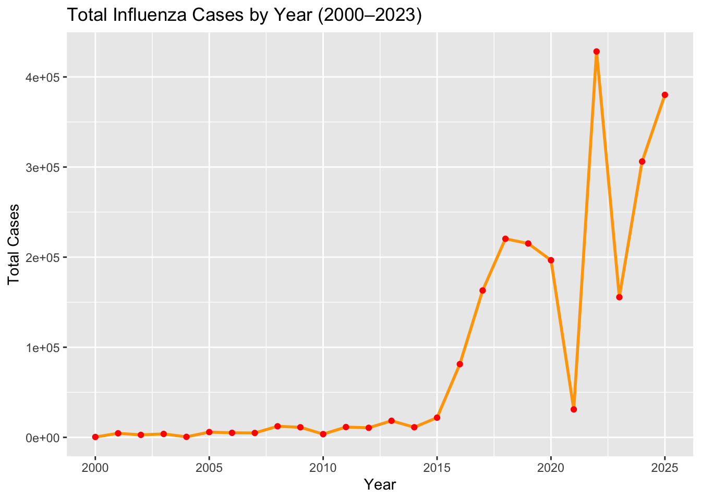
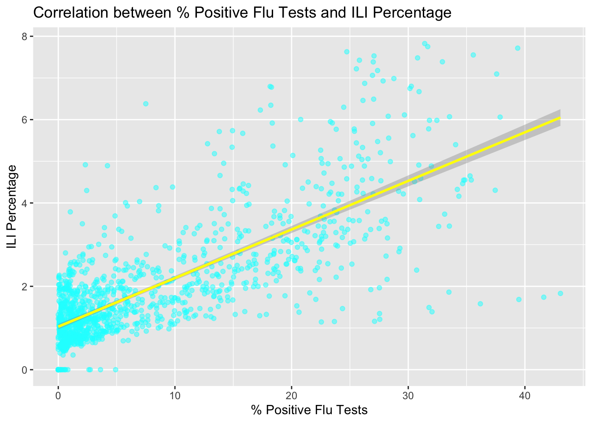
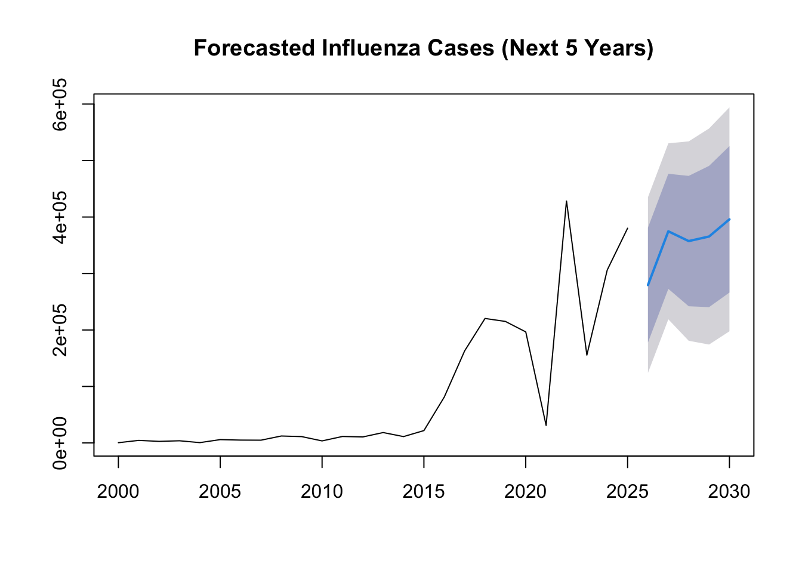

This section provides a deeper statistical and analytical look at U.S. influenza trends from 2000 to 2023, based on the CDC FluView dataset.
library(tidyverse)
data <- read.csv("cleaned_influenza_data.csv")
yearly_cases <- data %>%
group_by(Year) %>%
summarize(Total_Cases = sum(Total_A, na.rm = TRUE) + sum(Total_B, na.rm = TRUE))
ggplot(yearly_cases, aes(x = Year, y = Total_Cases)) +
geom_line(color = "orange", size = 1) +
geom_point(color = "red") +
labs(title = "Total Influenza Cases by Year (2000–2023)",
x = "Year", y = "Total Cases")
peak_weeks <- data %>%
group_by(Week) %>%
summarize(Average_Cases = mean(Total_A + Total_B, na.rm = TRUE)) %>%
arrange(desc(Average_Cases)) %>%
slice(1:5)
peak_weeks## # A tibble: 5 × 2
## Week Average_Cases
## <int> <dbl>
## 1 6 15096.
## 2 5 14441.
## 3 7 13733.
## 4 4 12322.
## 5 52 12230.cor_test <- cor.test(data$Percent_Positive, data$Weighted_ILI, use = "complete.obs")
cor_test##
## Pearson's product-moment correlation
##
## data: data$Percent_Positive and data$Weighted_ILI
## t = 41.547, df = 1275, p-value < 2.2e-16
## alternative hypothesis: true correlation is not equal to 0
## 95 percent confidence interval:
## 0.7340826 0.7807728
## sample estimates:
## cor
## 0.7583989ggplot(data, aes(x = Percent_Positive, y = Weighted_ILI)) +
geom_point(alpha = 0.5, color = "cyan") +
geom_smooth(method = "lm", color = "yellow") +
labs(title = "Correlation between % Positive Flu Tests and ILI Percentage",
x = "% Positive Flu Tests", y = "ILI Percentage")## `geom_smooth()` using formula = 'y ~ x'
library(forecast)
library(tibble)
yearly_cases_ts <- ts(yearly_cases$Total_Cases, start = 2000)
model <- auto.arima(yearly_cases_ts)
forecasted <- forecast(model, h = 5)
plot(forecasted, main = "Forecasted Influenza Cases (Next 5 Years)")
The data displayed in this analysis represents weekly influenza surveillance reports collected by the Centers for Disease Control and Prevention (CDC) from 2000 to 2023. It includes laboratory-confirmed influenza cases from clinical and public health labs across the United States, broken down by virus type (Influenza A & B). Additionally, the dataset incorporates information on Influenza-Like Illness (ILI), which measures the percentage of outpatient healthcare visits related to flu symptoms. This combined dataset captures over two decades of flu activity, providing insights into yearly trends, peak flu weeks, and the correlation between confirmed flu cases and ILI reports. The data is summarized and visualized to help users identify long-term patterns, annual fluctuations, and potential forecasting of future influenza seasons.